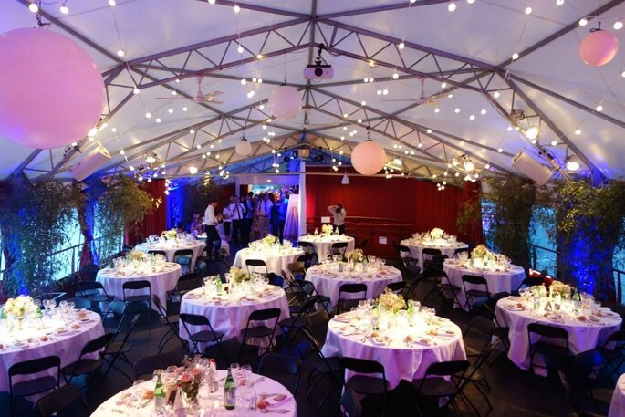

Programme des deux jours:
Dimanche 11 décembre 2022:
- 13h: Arrivée des invités
- 16h: séance photo avant la cérémonie du mariage
- 17h à 19h: Mariage à l'Eglise Saint-Pothin (Cérémonie, discours)
- 19h à minuit: Direction la fête des lumières!
Lundi 12 décembre 2022:
- Minuit à 1h: Repas de mariage avec dégustation du gâteau!
- 1h à 5h: Direction l'Opéra National de Lyon pour un petit concert, accompagné de Gwen et ses amis!
- 12h/13h: Repas du midi
- 14h à 18h: Petite visite de Lyon menée par Al
Lieu du Mariage
Le mariage se déroulera sur La Plateforme. C'est un bâteau de 600 m²,
conçu pour les évènements et pouvant accueillir jusqu'à 700 personnes. Nous resterons sur place du 11 au 12 décembre.

Hôtels à proximité:
- Hôtel Mercure Lyon Centre Beaux-Arts - 99€
- Hotel Mercure Lyon Centre Plaza Republique - 116€
- Hôtel Bayard Bellecour - 86€
- Hôtel Elysée - 61€
- Okko Hôtels - 94€
- Hôtel Silky Lyon by HappyCulture - 76€
Adresses:
- La Plateforme:4 Quai Victor Augagneur, 69003 Lyon
- La fête des lumières:Place Bellecour, 69002 Lyon (16 minutes à pieds de la Plateforme)
- Eglise Saint-Pothin:127 Rue de Créqui, 69006 Lyon (10 minutes à pieds de la Plateforme)
- Opéra National de Lyon1 Pl. de la Comédie, 69001 Lyon (9 minutes en train, 13 minutes à pieds)
Voici une carte montrant le lieu où le mariage se déroulera: